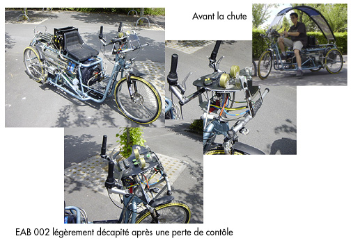

troisième prototype
Après de rapides essais intéressants avec le 002, où la puissance et le bon fonctionnement général du principe à air furent prouvés, nous avons décidé de passer directement à l'étape suivante...
C'est grâce à l'achat d'un utilitaire Vespacar Piaggo d'occasion que nous allons poursuivre l'aventure.
Alors, pourquoi ce changement rapide ? D'une part les essais du 002 ont montré la limite en terme de tenue de route. Le système de suspension pneumactive est plus lent que prévu et son retard nous a gratifié d'une très belle cascade de la part de Jean François.
D'autre part nous avons perdu beaucoup de temps dans la conception du véhicule, par rapport à tous les organes de pilotage : direction, freinage, changement de vitesses, tenue de route, poids de l'ensemble...tout ceci reste encore très perfectible. Seul le principe de fonctionnement des moteurs et leur efficacité sont au rendez-vous.
Ainsi la base du Piaggo nous permet de gagner énormément de temps car tout est déjà au point et fonctionne parfaitement : direction, freinage, suspension, tenue de route, poste de pilotage... Il y a même une carte grise.
Nous allons ainsi pouvoir nous concentrer sur le système de propulsion à air.
Données techniques :
- Stockage d'air à 200 bars dans 2 réservoirs Haute pression de 126 litres chacun.
- 2 phases de détente : 16 bars, puis 6 bars, pression d'utilisation du moteur.
- Moteur pneumatique à palette de 3,5 Kw, soit environ 5 chevaux.
- Autonomie : 50 km en parcours urbain avec un vitesse max de 50 Km/h.